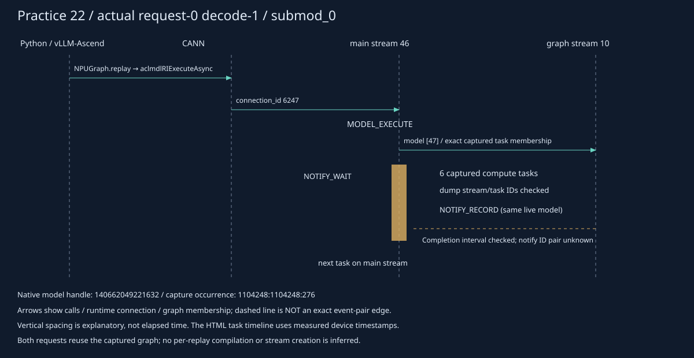

Qwen2.5-0.5B-Instruct · Ascend910B2C · 原生 eager / PIECEWISE graph / 随机采样
| 阶段 | 负责的层 | 这次追踪到的行为 |
|---|---|---|
| 初始化 / 首次调用 | vLLM-Ascend → torch-npu | 创建或取用 stream。一次 Python Stream() 可以触发底层批量建池。 |
| 模型 forward | 模型实现与当前 stream 上下文 | eager 算子沿当前流提交；不因空闲核多就自动拆成多流。 |
| graph 捕获 | vLLM 分区 → torch-npu → CANN | 捕获分区拥有内部任务流；正式请求通过运行实例复用它们。 |
| 采样分支 | vLLM-Ascend sampler | 显式切换辅助流；提前生成配置改变生产和汇合位置。 |
框架流的创建数量、请求使用的物理流数量、同时执行的流数量是三种不同统计。本次未修改核数或人工改流。
点击一行查看资源、创建调用栈或 graph 归属。graph 内部流的所属分区可以验证；其 CANN 内部分配调用没有被当前 API 边界直接记录。
| 物理流 | 正式任务 / 计算任务 | 来源 | 分区 | 查看 |
|---|
横轴来自真实设备时间；只展示当前筛选。点击表格任务，核对 host flow、CANN connection、graph dump 及核数字段。任务核数不表示分配了多少 stream。
| 任务 | stream / task | 耗时 μs | 核数 | 分配证据 |
|---|
原生 event 记录按进程、句柄和 record 代次配对。设备流等待与 CPU 等待分别展示；时间相邻不构成依赖。
graph 的 MODEL_EXECUTE / NOTIFY_WAIT 可由 replay 的 connection ID 关联；图内任务由有效期内的 Model ID、Stream ID、Task ID 和重复序列关联。未捕获到 NOTIFY 的具体标识，不把它画成精确 event 配对边。

打开独立 SVG示意图使用本轮实际身份和任务关系，纵向距离不代表耗时。
| 分区 | Model ID / 内部流 | 生命周期 | 正式 replay 数 |
|---|
graph 初始化先用于显存估算，再销毁并正式捕获。不能只用 Model ID、Python id 或句柄关联旧对象。这里同时保存捕获和销毁证据。
采集增加主机观察开销；这些记录用于解释架构，不用于宣称速度提升。未看到资源限制 API 调用，只能说明已覆盖边界中的观测结果，不能排除库内部其他策略。